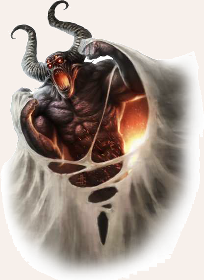

"Doch sei auf der Hut, denn auch das Chaos folgt einer aberwitzigen Logik. Glaube bloß nicht, dass das Chaos allein ein schwarzer Abgrund sei, aus dem ewiges Gekreische in die Schöpfung dringt. Nein, denn wo die Götter vielleicht ihre Paradiese haben, inden sich in den Niederhöllen Orte, an denen es einfacher ist, Dämonen einer bestimmten Quelle zu finden. Die blutigen Richtstätten von Kholak-Kai, die grausigen Beinfelder von Yaq-Monnith, die nachtblauen und tentakelbewehrten Tiefen von Yamesh, das allgegenwärtige und lügendurchdrungene Thezzphai, die seelenmahlende Feste der Nacht, das irrsinnige Spiegelgebilde von Gnaph`Caor, die blindmachende Grelle der widereisigen Ebene, das ewigwirre Gewandel des Sefaloth, die immervollen Schatzkammern von Zholvar, das wimmelnde Chaos der Gänge von Hirr`Horasch, die kranken Straßen und qualmenden Schlote von Yol-Ghurmak, die schwarzfaule Feste der Dar-Klajid. Kenne die Ordnung in der Nichtordnung und dein ist der Schlüssel über die Herrschaft der Welt. Denn niemand wird dir zu widerstehen vermögen, wenn du mit einem Wort die Macht der Niederhöllen über sie rufen kannst."

Neben dem Namenlosen gibt es weitere bedrohliche Gegenspieler der Götter, nämlich jene, die außerhalb der Schöpfung stehen:
die Widersacher aller Götter, die Schrecken aus der Siebten Sphäre.
Die Welt jenseits des Sternenwalls und der Sechsten Sphäre, die auch als das Draußen oder das Chaos bekannt ist, gilt als Heimstatt der Dämonen.
Derzeit hat es den Anschein, als ob sich im Chaos zu jedem Zwölfgott ein eigener Widersacher in Form eines Erzdämons manifestiert hat.
Deren niederhöllische Horden streben danach, das Wirken der Götter zunichte zu machen oder zu pervertieren, auf dass die gesamte Welt vom Chaos verschlungen werden kann.
Ob sie dem Dämonensultan der Legenden gehorchen müssen oder ihm je Vasallentreue geschworen haben, ist unbekannt.
Diese Vorstellung entspringt jedoch wahrscheinlich dem geordneten Denken der Welt und viel weniger dem Chaos, aus dem diese Entitäten stammen.
Manch ein verderbter Sterblicher hat mit einem dieser Wesen einen Pakt geschlossen und seine Seele im Austausch für einen Teil ihrer Macht den Niederhöllen verschrieben.
Vom insteren Schwarzmagier Borbarad sagte man sogar, dass er dank der verluchten Dämonenkrone gleich mit sieben Höllenfürsten paktiert hat.
Bis heute existiert das Erbe dieses Frevels in Form der verbliebenen Splitter der Krone weiter in der Welt.
• Blakharaz oder Tyakra`man: Gegenspieler Praios`, Herr der blinden Rache, Bewacher der Seelenmühle, in der die verlorenen Seelen der Sterblichen zermahlen werden
• Belhalhar oder Xarfai: Gegenspieler Rondras, der jenseitige Mordbrenner, Herr des Blutrauschs und des Massakers, Anführer der unbesiegbaren Legion von Yaq-Monnith
• Charyptoroth oder Gal`k`zuul: Gegenspielerin Efferds, die unbarmherzige Ersäuferin und Herrin des Unwassers, Mutter aller Seeschlangen
• Lolgramoth oder Thezzphai: Gegenspieler Travias, der Rastlose, Herr der Zwietracht und des Verrats
• Thargunitoth oder Tijakool: Gegenspielerin Borons, Herrin der Alpträume, Gebieterin von Geistern und Untoten
• Amazeroth oder Iribaar: Gegenspieler Hesindes, der vielgestaltige Blender, Herr des verbotenen Wissens und des Wahnsinns
• Nagrach oder Belshirash: Gegenspieler Firuns, der gnadenlose Jäger und Herr des verderbten Eises, Gebieter der Wilden Jagd, die ihre Opfer zu Tode hetzt und deren Seelen frisst
• Asfaloth oder Calijnaar: Gegenspielerin Tsas, Herzogin des wimmelnden Chaos und Herrin der Chimären
• Tasfarelel oder Zholvar: Gegenspieler Phexens, der gierige Feilscher, Herr des blutbeleckten Goldes
• Mishkhara oder Belzhorash: Gegenspielerin Peraines, faulende Monarchin des ewigen Siechtums, Herrin der Missernten und der Unfruchtbarkeit
• Agrimoth oder Widharcal: Gegenspieler Ingerimms, Schänder der Elemente, Verderber von Erz, Feuer, Luft und Humus, Fürst der jenseitigen Dämonenschmiede Yol-Ghurmak und Herr der dunklen Handwerkskunst
• Belkelel oder Dar-Klajid: Gegenspielerin Rahjas, Vielgeschlechtliche Versucherin, Meisterin der schwarzfaulen Lust und Herrin der blutigen Ekstase